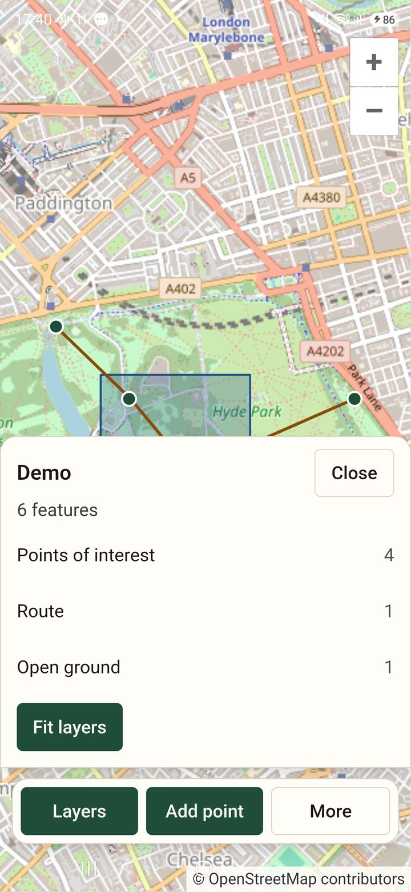

Draw
Add points, lines, and polygons. A line or polygon follows the point list, and building it again replaces the previous shape.
Browser and Android
Several people work in one project. Points, lines, polygons, and live GPS stay together and sync through one server.
Open source. No accounts. A project is opened with a token, never with a password in the address.

The picture under the data is OpenStreetMap. Measurements do not treat that picture as a survey control.
Add points, lines, and polygons. A line or polygon follows the point list, and building it again replaces the previous shape.
Import a shapefile zip, GeoJSON, GPX, or KML. Export a layer back out as a shapefile, GPX, or KML.
Length and area are geodesic. A polygon that crosses itself is reported, instead of being given a misleading area.
A phone can share its position. The mark fades after 30 seconds and drops after 2 minutes. Recording a track is a separate switch, and it keeps writing while the screen is off.
Edits made without a network are stored and sent later. The same edit is not applied twice. The current map view can be saved for offline, up to 4000 tiles.
Positions are stored as longitude and latitude. The display can show WGS 84 or a registered 6° Gauss–Krüger zone of SK-42, SK-95, or GSK-2011. A local drawing can be seated with control points.
The Android app is MapLite. It asks for the camera as soon as it opens, because the first job is to join a project.
From the computer you can ask a phone to start or stop live sharing and track recording. The phone has to allow remote control, and a command waits until the app is open.
corepack pnpm install and corepack pnpm dev.